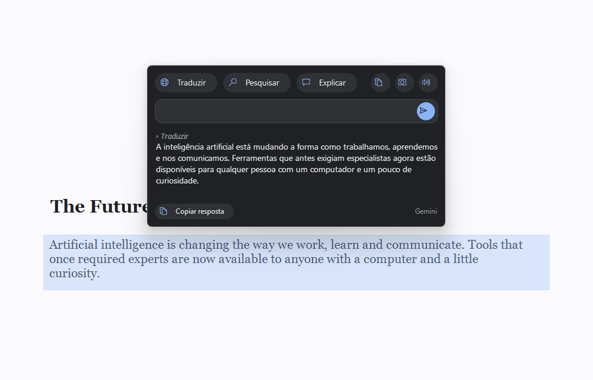
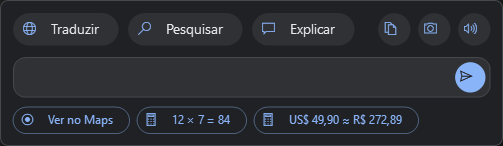
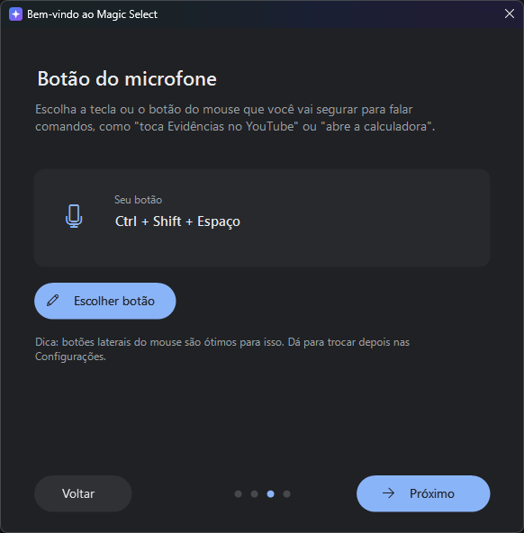
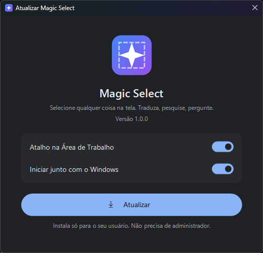
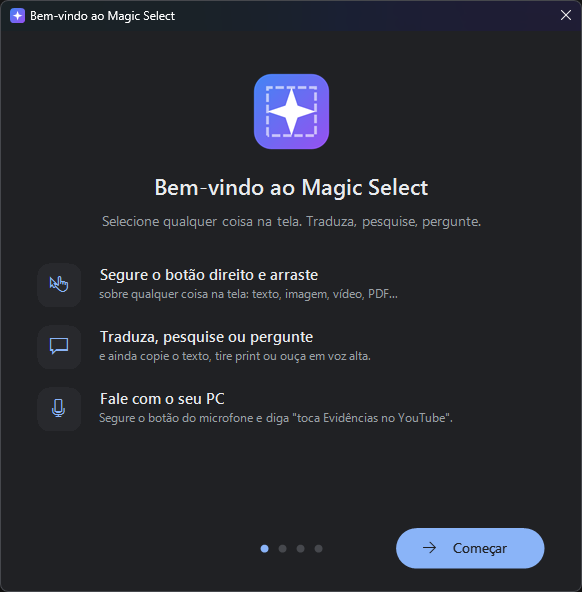

Segure o botão direito do mouse e arraste sobre qualquer coisa na tela. A IA faz o resto.
⬇ Baixar para Windows Ver como funciona
Funciona em qualquer lugar: sites, PDFs, imagens, vídeos, jogos e programas. Um clique normal com o botão direito continua igual.
Traduz o texto da área selecionada, até de imagens e vídeos.
A IA monta a pesquisa certa e abre o Google para você.
Pergunte qualquer coisa sobre o que você selecionou e continue a conversa.
Lê o texto de imagens e prints e copia na hora.
Copia só a área selecionada e salva em Imagens.
Ouça qualquer texto com a voz do Windows.
Tudo que você copia no PC fica guardado: textos, imagens e arquivos. Busque e copie de novo.
O Magic Select percebe o que você selecionou e mostra o atalho certo: ver um endereço no Maps, abrir um link, mandar e-mail, chamar no WhatsApp, fazer uma conta ou converter dólar e euro para real com a cotação do dia.


Segure o botão que você escolher (uma tecla ou um botão lateral do mouse), fale e solte.
🎮 Jogando em tela cheia? O Magic Select se desliga sozinho.
Não precisa ser administrador.
Se aparecer "O Windows protegeu o computador", clique em Mais informações › Executar assim mesmo. Isso acontece com programas novos que ainda não têm assinatura digital.
Ele fica pronto perto do relógio e abre junto com o Windows.
O guia de boas-vindas ajuda você a criar sua chave gratuita do Google Gemini e a escolher o botão do microfone.


Sim. A IA usada é o Google Gemini, que tem plano gratuito. Cada pessoa usa a própria chave, criada em aistudio.google.com/apikey.
Sua chave fica só no seu PC, criptografada pelo Windows. A área selecionada é enviada ao Google Gemini quando você usa uma ação ou faz uma pergunta. Com as ações inteligentes ligadas, ela é enviada assim que o cartão abre (dá para desligar). No comando de voz, o áudio gravado enquanto você segura o botão vai para o Gemini. O Magic Select não tem servidor próprio e não coleta nada.
O programa observa o mouse para perceber o arrasto com o botão direito, e alguns antivírus desconfiam disso em programas novos. O código está todo no GitHub.
Configurações do Windows › Aplicativos › Magic Select › Desinstalar.